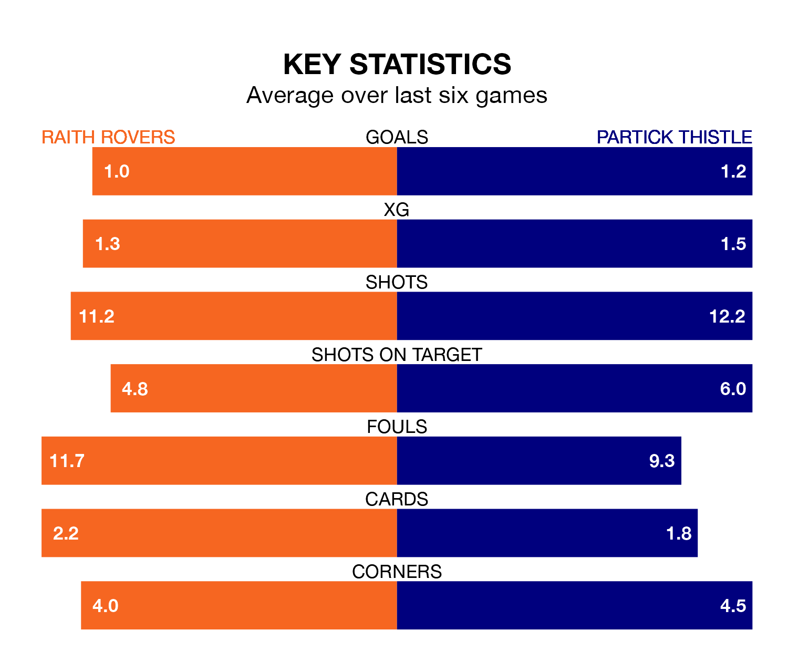

Raith Rovers host Partick Thistle in Saturday's match at Stark's Park looking to bounce back from defeat last time out in the Championship.
Raith, who sit second in the league after 32 games, fell to a 3-1 home defeat to Airdrieonians on Tuesday.
They face a Partick Thistle side who secured a draw in their last match, a 1-1 tie with Dunfermline Athletic, and who sit third in the table.
With 58 goals in 32 games so far this season, Partick Thistle are the league's second-highest scorers with 1.8 goals per game. But they are conceding more than average too, letting in 50 goals at a rate of 1.6 per game.
Raith are also above average scorers, with 1.6 goals per game, compared to a league average of 1.4. They have conceded 1.3 goals per game.
In Brian Graham, Thistle have the league's sharpest shooter so far this season. He has notched 18 goals in 30 appearances.
His goal rate of one every 139 minutes is quicker than that of Lewis Vaughan, Rovers' top scorer with a goal every 168 minutes, and a total of 12 goals in 30 games.
In the last 10 years, Raith and Partick Thistle have played each other on 12 occasions. Raith won six of them, Partick Thistle three, and they drew three times.
On average, Raith scored 1.6 goals and Thistle 1.3 in those matches.
Their last meeting was on March 12, when Raith won 1-0 away.
The hosts are in mixed form in the Championship, with three wins and a draw from their last six games.
With three wins and two draws over that period, the away team's form is slightly better – they have taken 11 points from 18, compared to Raith's 10.
Saturday's match will be refereed by David Munro, who has taken charge of six Championship games so far this season, issuing one red card and booking 27 players. He has awarded two penalties.
The last Raith game Munro refereed was a 2-1 away win against Ayr United on September 30. His last Partick Thistle match was their 3-1 loss at home against Dunfermline Athletic on February 23.
Updated: 10:01 (UTC), 12/04/24